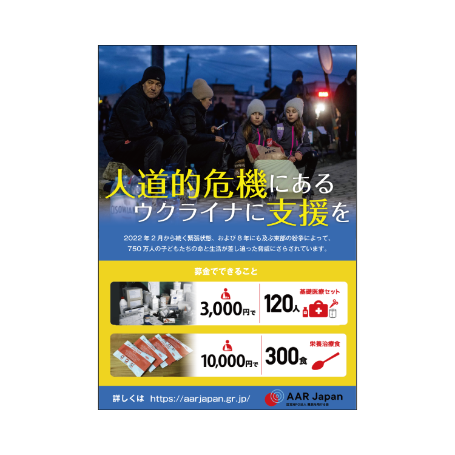

今ウクライナとロシア間での戦争が起きています。ウクライナの避難民の人達に少しでも普通の生活が送れるようにとウクライナの募金ポスターを制作しました。
ポスターの背景色をウクライナの国旗である青色と黄色を入れました。募金のお願いだけだと詳細なことがわからないと思ったので、実際の募金額でどのようなものができるのかを載せました。
Adobe Illustrator
4時間 (2021.12)
3 / 4